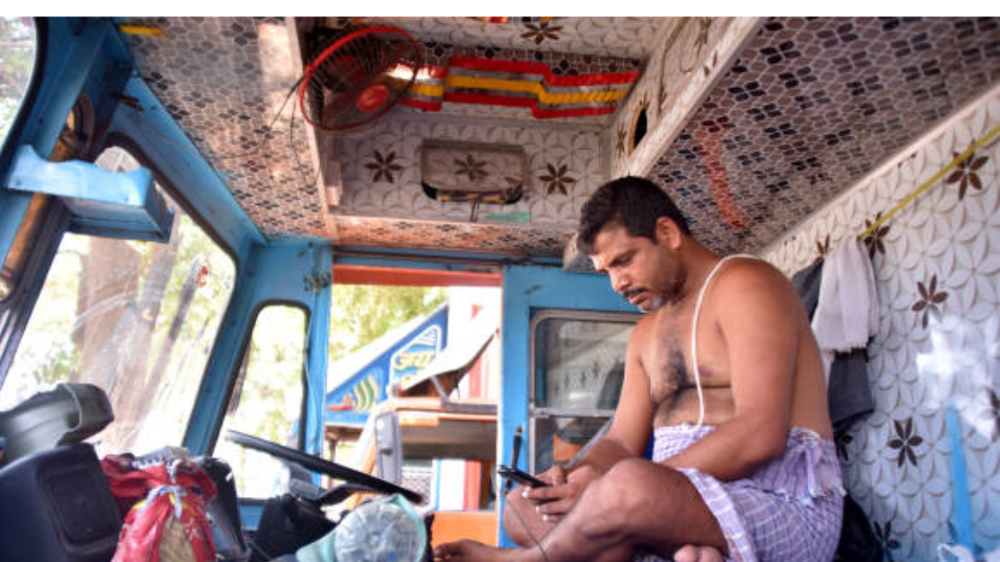

HOW TRUCK DRIVER SHORTAGE EFFECT THE ECONOMY
Indian Truck drivers play a major role in maintaining the economy of our country. Trucks transport the most economically important commodities. Although these commodities are high on the list of market failures as weak trucking conditions carry the burden associated with their movement is justified from an economical perspective. Truck transportation has profound impacts on the social and economical well being of India. For example, on some of the major expressways, trucks can account for as much as 40% of total traffic on the National Highways. While it is true that package pick-up and delivery activities by Trucks are one of the leading causes of urban delays. There appears to be a huge gap between the transport of goods and the consumption of necessities such as commercial goods, services, and energy. The same can be said for economic contributions such as the nations economic growth. The focus of policy discussions on truck transportation in urban areas is almost always entirely on how to manage the negative impacts of truck activities through restrictions on their movement and access. A long-standing ban on daytime truck delivery in India is one such example.
Truck Driver Shortage

Throughout the last decade, the trucking industry has faced a huge
driver shortage. The driver shortage affects the entire economy
because highways transport over 68% of all goods in India. And, as
the cause that raises driver shortage, it has the potential to have
a significant impact on the supplier costs and, as a result, It can
also cause shipping delays and store shortages impacting our
economy.
The demographic of the current workforce, particularly age and
gender, is one of the most significant factors influencing the
driver shortage. The trucking industry is heavily reliant on male
employees. With an alarming number of the drivers who are set to
retire in 10-20 years, we are on the verge of a dangerous cliff. A
cliff that, if fallen off, will have a significant impact on the
industry if new, younger workers are not hired.
Poor Conditions And Low Pay Of Truck Drivers Results In Huge Driver Crisis

"Truck drivers are safety devices, " "If the Trucks are running behind, you cant just keep the trucker idle. If they are not being paid, you cannot back them up for hours. "
Indian Truck drivers are classified and compensated in such a way that they have to wait until they are needed to shipping companies. As a result, there is little incentive given to them to use them for driving. For now, truckers continue to be misclassified. Truck drivers are paid by the load they carry, not by the hour, making them some of the most vulnerable workers of the country. they aren’t even considered as employees and don’t get any of the benefits or protections associated with that status that in itself is a major downfall for the truck drivers.
"Truck driving is a fairly difficult profession. It's extremely stressful on the body. It requires people to be away from their families and awake at extremely odd hours. it becomes lonely for them . "However, those who took part did so because there was a wage premium or did not have any choice. This has become increasingly a result of economic liberalization."
Lifestyle of a Truck Driver

The lifestyle of a truck driver is the next important topic to
discuss. This lifestyle is unsuitable for many people, and it
discourages them from even considering a career as a truck driver.
Most new drivers are assigned routes that keep them on the road for
extended periods of time, returning home only a few times per month.
It can be difficult to adjust to living in a truck and showering at
rest stops.
Being on the road nonstop also limits the driver's diet options.
Nobody can eat fast food and gas station snacks without suffering
some health consequences. Not to mention, combine that kind of
eating with a truck driver's healthy life, and the weight will pile
on. This highcalorie, high-sugar diet can lead to serious health
issues like diabetes, high blood pressure, and digestive problems.
Drivers frequently skip sleep breaks in order to get their freight
to its destination as soon as possible. This not only physically but
also mentally affects the driver. Side effects such as mental
fogginess, poor judgement, and forgetfulness can all make drivers
more prone to accidents.
How RIYO Solves The Truck Driver Shortage

Due to the challenges regarding the Truck Driver shortage, The following are some responses and potential policy solutions that RIYO initiates to solve the driver shortage:
Smart income to Truck Drivers
As we are seeing when there is a shortage of truck drivers, RIYO initiative is to raise the wages of its truck drivers with offering raises in addition to comprehensive benefits packages and various other options for its drivers.
Reduce drivers Time on the Road
Spending more time at home and less time on the road can help relieve many of the "lifestyle" issues. Reduce the average length of haul and keep our truckers more localized.
Lower Regulated Driving Age
The 18-20-year-old age group has the highest unemployment rate of any age group. RIYO, hires the commercial and deserved truck driver's with minimum age to help a large pool of competent workers by hiring them through filling open positions.
Independent Trucking
With the advanced technology that independent trucking brings, as well as the benefits of reducing daily driving stress and boredom, RIYO is bound to attract young, tech-savvy drivers.
Giving Less Truckload Shipping
The majority of the driver shortage occurs on the road (OTR) and full-truckload (FTL) shipping methods, as these methods require a lot of time on the road and that hard truck driver lifestyle. So that the drivers, on the other hand, return home each evening.
Wrapping Up
It is a matter of great concern that the truck drivers who play a major role in maintaing the economy of our country are considered as a minority and are neglected by the society. Therefore, RIYO,s initiative by helping the truck drivers by providing value and dignity to their profession so that, the driver on the wheels feel proud for their profession and continue to contribute and boost the economy of our country. With RIYO, it is possible.